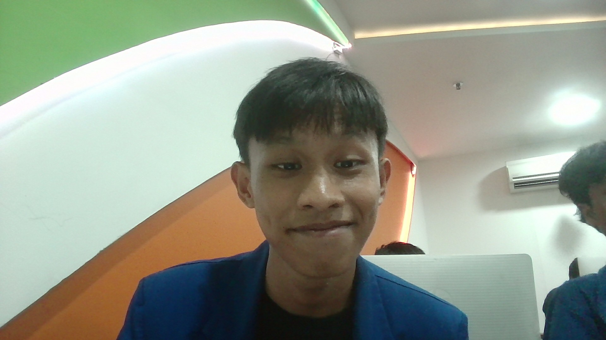

M. Abriiel Afrian Lenry
NIM: 202431020 · Kelas: B
Mahasiswa Teknik Informatika — fokus pada pengembangan aplikasi dan embedded systems.
NIM: 202431020 · Kelas: B
Mahasiswa Teknik Informatika — fokus pada pengembangan aplikasi dan embedded systems.